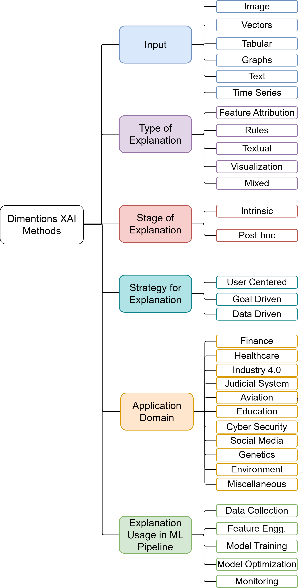

A Comprehensive Survey on Explainable AI for conventional Machine Learning Pipeline and Domains-specific Applications
This repository provides a comprehensive, continuously updated collection of research references exploring Explainable Artificial Intelligence (XAI) within traditional Machine Learning workflows and domain-specific implementations. We emphasize methodological approaches that introduce transparency and interpretability throughout the entire ML ecosystem—from initial data preprocessing through final model deployment.
Our investigation encompasses XAI methodologies applied across diverse application domains, while simultaneously examining scholarly contributions that integrate explainability into core ML pipeline components: data preparation, feature selection and engineering, model development, performance assessment, system monitoring, and production deployment.
This work aims to provide researchers and practitioners with a systematic framework that connects automated ML processes with human-interpretable decision-making through principled explainability approaches.
Taxonomy Framework
Our proposed taxonomy framework is illustrated through both an interactive visualization and detailed diagram below. This classification system encompasses six fundamental dimensions: (1) Input Data Characteristics (2) Explanation Methodologies (3) Temporal Stages of Explanation (4) Strategic Approaches to Explanation (5) XAI Integration within ML Pipelines and (6) Domain-Specific XAI Applications.
Click nodes to expand/collapse branches

XAI ML Pipeline Architecture
The following interactive diagram illustrates our four-layered architecture for integrating explainability throughout the ML pipeline:
Interactive four-layered XAI ML pipeline architecture
The architecture consists of:
- Operational Layer: Operational layer with core ML pipeline stages from data preparation to monitoring
- Explanation Layer: Explanation layer with causal XAI functions and techniques
- Interactivity Overlay: Interactivity layer including stakeholders, feedback mechanisms, and impact assessment
- Governance Overlay: Top-level governance controls including regulatory compliance, ethical guidelines, privacy & security, and quality assurance that oversee all operations
Project Contribution
To contribute a change to add more references to our repository, you can follow these steps:
Create a branch in git and make your changes. Push branch to github and issue pull request (PR). Discuss the pull request. We are going to review the request, and merge it to the repository.